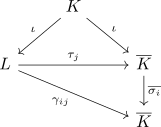

Gradformel für den Separabilitätsgrad
Satz
Seien $L/E$, $E/K$ algebraische Körpererweiterungen für Körper $L,E,K$. Dann gilt für den Separabilitätsgrad
Beweis
Sei $\overline{K}$ ein Algebraischer Abschluss von $K$ und damit auch von $L,E$. Sei
für paarweise verschiedene $\sigma_i,\sigma_j$ bzw. $\tau_i,\tau_j$.
Nach dem Fortsetzungssatz für Körpererweiterungen lässt sich $\sigma_i$ zu einem K-Automorphismus $\overline{\sigma}_i: \overline{K} \rightarrow \overline{K}$, da $\overline{K}/K$ eine algebraische Körpererweiterung ist
Sei
gegeben durch

paarweise verschieden
Seien $\gamma_{ij}, \gamma_{i'j'}$ für $(i,j) \neq (i',j')$ gegeben mit
Dann folgt, da $\tau$ ein \(E\)-Homomorphismus und $\gamma$ ein \(E\)-Homomorphismus für $L \subseteq E$ ist, auch
Damit folgt wegen
und der Annahme, dass
bzw. $\sigma_i = \sigma_{i'}$ resp. $i = i'$. Damit folgt
und da $\overline{\sigma}_{i'}$ als isomorphism auch ein monomorphism ist (cf. isomorphism as monomorphism) folgt aus
auch
etwas unklar ?
andere richtung
Sei $\gamma \in \mathrm{Hom}_{K}(L,\overline{K})$. Dann ist $\gamma_{\vert E} \in \mathrm{Hom}_{K}(E, \overline{K})$, also folgt $\gamma_{\vert E} = \sigma_{i}$ für ein $\sigma_{i} \in \mathrm{Hom}_{K}(E, \overline{K})$
Ferner existiert zu $\overline{\sigma_{i}}$ ein inverser morphismus, nämlich $\overline{\sigma_i}^{-1}$